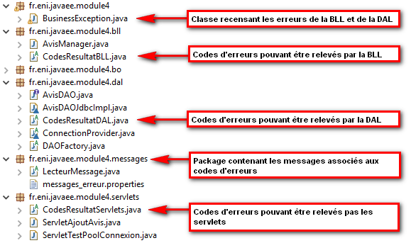

Le lien suivant permet d'afficher un formulaire permettant l'ajout d'un avis : /modules/module4/ServletAjoutAvis. Le fichier correspondant est le fichier ajoutAvis.jsp présent dans le répertoire /WEB-INF/modules/module4. Pour y accéder, il est nécessaire de faire une requête de type GET vers le servlet ServletAjoutAvis du package fr.eni_ecole.javaee.module4.servlets. Le code de cette servlet est disponible un peu plus loin dans cette page. Voici le code la JSP:
<%@page import="fr.eni.javaee.module4.messages.LecteurMessage"%>
<%@page import="java.util.List"%>
<%@page import="fr.eni.javaee.module4.bo.Avis"%>
<%@ page language="java" contentType="text/html; charset=UTF-8"
pageEncoding="UTF-8"%>
<!DOCTYPE html PUBLIC "-//W3C//DTD HTML 4.01 Transitional//EN" "http://www.w3.org/TR/html4/loose.dtd">
<html>
<head>
<meta http-equiv="Content-Type" content="text/html; charset=UTF-8">
<title>Ajouter un avis</title>
</head>
<body>
<%
Avis avis = (Avis)request.getAttribute("avis");
if(avis!=null)
{
%>
<p style="color:red;">L'avis a été ajouté avec succès :</p>
<p><%=avis %></p>
<%
}
%>
<%
List<Integer> listeCodesErreur = (List<Integer>)request.getAttribute("listeCodesErreur");
if(listeCodesErreur!=null)
{
%>
<p style="color:red;">Erreur, l'avis n'a pas pu être ajouté :</p>
<%
for(int codeErreur:listeCodesErreur)
{
%>
<p><%=LecteurMessage.getMessageErreur(codeErreur)%></p>
<%
}
}
%>
<form action="<%=request.getContextPath()%>/modules/module4/ServletAjoutAvis" method="post">
<label for="idDescription">Description : </label><input type="text" id="idDescription" name="description" value="<%=listeCodesErreur!=null?request.getParameter("description"):""%>"/>
<br/>
<label for="idNote">Note : </label><input type="text" id="idNote" name="note" value="<%=listeCodesErreur!=null?request.getParameter("note"):""%>"/>
<br/>
<input type="submit" value="Valider"/>
</form>
</body>
</html>
La capture d'écran suivante indique la structure cible retenue. Vous pouvez constatez la présence des classes constituant le pattern DAO. A ces classes s'ajoutent quelques classes supplémentaires car l'idée est de gérer ici les exceptions sous forme de codes d'erreurs.
Ce package contient la classe BusinessException. Son rôle est de capturer tous les codes d'erreurs pouvant survenir lors d'un traitement métier. Ainsi les erreurs au niveau de la BLL ou de la DAL seront capturées dans une exception de ce type
package fr.eni.javaee.module4;
import java.util.ArrayList;
import java.util.List;
/**
*
* @author Administrator
*
* Cette classe permet de recenser l'ensemble des erreurs (par leur code) pouvant survenir lors d'un traitement
* quel que soit la couche à l'origine.
*/
public class BusinessException extends Exception {
private static final long serialVersionUID = 1L;
private List<Integer> listeCodesErreur;
public BusinessException() {
super();
this.listeCodesErreur=new ArrayList<>();
}
/**
*
* @param code Code de l'erreur.
* Doit avoir un message associé dans un fichier properties.
*/
public void ajouterErreur(int code)
{
if(!this.listeCodesErreur.contains(code))
{
this.listeCodesErreur.add(code);
}
}
public boolean hasErreurs()
{
return this.listeCodesErreur.size()>0;
}
public List<Integer> getListeCodesErreur()
{
return this.listeCodesErreur;
}
}
Ce package contient les classes métiers structurant les informations manipulées. Dans ce package, on retrouve donc la classe Avis:
package fr.eni.javaee.module4.bo;
import java.io.Serializable;
public class Avis implements Serializable {
private static final long serialVersionUID = 1L;
private int identifiant;
private String description;
private int note;
public int getIdentifiant() {
return identifiant;
}
public void setIdentifiant(int identifiant) {
this.identifiant = identifiant;
}
public String getDescription() {
return description;
}
public void setDescription(String description) {
this.description = description;
}
public int getNote() {
return note;
}
public void setNote(int note) {
this.note = note;
}
public Avis() {
}
public Avis(String description, int note) {
super();
this.description = description;
this.note = note;
}
public Avis(int identifiant, String description, int note) {
super();
this.identifiant = identifiant;
this.description = description;
this.note = note;
}
@Override
public String toString() {
return "Avis [identifiant=" + identifiant + ", description=" + description + ", note=" + note + "]";
}
}
Ce package est bien sûr le plus complexe. Il met en oeuvre le pattern DAO. On retrouve les éléments suivants :
package fr.eni.javaee.module4.dal;
import fr.eni.javaee.module4.BusinessException;
import fr.eni.javaee.module4.bo.Avis;
public interface AvisDAO {
/**
* En cas d'erreur, le code d'erreur est enregistré dans l'objet businessException.
* @param avis
* @throws BusinessException
*/
public void insert(Avis avis) throws BusinessException;
}
package fr.eni.javaee.module4.dal;
import java.sql.Connection;
import java.sql.PreparedStatement;
import java.sql.ResultSet;
import fr.eni.javaee.module4.BusinessException;
import fr.eni.javaee.module4.bo.Avis;
class AvisDAOJdbcImpl implements AvisDAO {
private static final String INSERT="INSERT INTO AVIS(description, note) VALUES(?,?);";
@Override
public void insert(Avis avis) throws BusinessException {
if(avis==null)
{
BusinessException businessException = new BusinessException();
businessException.ajouterErreur(CodesResultatDAL.INSERT_OBJET_NULL);
throw businessException;
}
try(Connection cnx = ConnectionProvider.getConnection())
{
PreparedStatement pstmt = cnx.prepareStatement(INSERT, PreparedStatement.RETURN_GENERATED_KEYS);
pstmt.setString(1, avis.getDescription());
pstmt.setInt(2, avis.getNote());
pstmt.executeUpdate();
ResultSet rs = pstmt.getGeneratedKeys();
if(rs.next())
{
avis.setIdentifiant(rs.getInt(1));
}
}
catch(Exception e)
{
e.printStackTrace();
BusinessException businessException = new BusinessException();
if(e.getMessage().contains("CK_AVIS_note"))
{
businessException.ajouterErreur(CodesResultatDAL.INSERT_AVIS_NOTE_ECHEC);
}
else
{
businessException.ajouterErreur(CodesResultatDAL.INSERT_OBJET_ECHEC);
}
throw businessException;
}
}
}
package fr.eni.javaee.module4.dal;
public abstract class DAOFactory {
public static AvisDAO getAvisDAO()
{
return new AvisDAOJdbcImpl();
}
}
package fr.eni.javaee.module4.dal;
import java.sql.Connection;
import java.sql.SQLException;
import javax.naming.Context;
import javax.naming.InitialContext;
import javax.naming.NamingException;
import javax.sql.DataSource;
abstract class ConnectionProvider {
private static DataSource dataSource;
/**
* Au chargement de la classe, la DataSource est recherchée dans l'arbre JNDI
*/
static
{
Context context;
try {
context = new InitialContext();
ConnectionProvider.dataSource = (DataSource)context.lookup("java:comp/env/jdbc/pool_cnx");
} catch (NamingException e) {
e.printStackTrace();
throw new RuntimeException("Impossible d'accéder à la base de données");
}
}
/**
* Cette méthode retourne une connection opérationnelle issue du pool de connexion
* vers la base de données.
* @return
* @throws SQLException
*/
public static Connection getConnection() throws SQLException
{
return ConnectionProvider.dataSource.getConnection();
}
}
package fr.eni.javaee.module4.dal;
/**
* Les codes disponibles sont entre 10000 et 19999
*/
public abstract class CodesResultatDAL {
/**
* Echec général quand tentative d'ajouter un objet null
*/
public static final int INSERT_OBJET_NULL=10000;
/**
* Echec général quand erreur non gérée à l'insertion
*/
public static final int INSERT_OBJET_ECHEC=10001;
/**
* Echec de l'insertion d'un avis à cause de la note
*/
public static final int INSERT_AVIS_NOTE_ECHEC=10002;
}
Ce package a pour rôle de recevoir les demandes de l'utilisateur et d'effectuer les traitements associés.
package fr.eni.javaee.module4.bll;
import fr.eni.javaee.module4.BusinessException;
import fr.eni.javaee.module4.bo.Avis;
import fr.eni.javaee.module4.dal.AvisDAO;
import fr.eni.javaee.module4.dal.DAOFactory;
/**
*
* @author Administrator
*
* Cette classe permet d'effectuer les traitements attendus sur la classe Avis
*/
public class AvisManager {
private AvisDAO avisDAO;
/**
* Le constructeur permet d'initialiser la variable membre avisDAO pour
* permettre une communication avec la base de données.
*/
public AvisManager() {
this.avisDAO=DAOFactory.getAvisDAO();
}
/**
* @param description
* @param note
* @return un objet Avis en cas de succcès
* @throws BusinessException
*/
public Avis ajouter(String description, int note) throws BusinessException
{
BusinessException exception = new BusinessException();
Avis avis = new Avis(description, note);
this.validerNote(avis,exception);
this.validerDescription(avis,exception);
if(!exception.hasErreurs())
{
this.avisDAO.insert(avis);
}
if(exception.hasErreurs())
{
throw exception;
}
return avis;
}
/**
* Cette méthode permet de vérifier les règles à respecter sur la variable membre note.
* En cas d'erreur, le code d'erreur est enregistré dans l'objet businessException.
* @param avis
* @param businessException
*/
private void validerNote(Avis avis, BusinessException businessException)
{
if(avis.getNote()<1 || avis.getNote()>5)
{
businessException.ajouterErreur(CodesResultatBLL.REGLE_AVIS_NOTE_ERREUR);
}
}
/**
* Cette méthode permet de vérifier les règles à respecter sur la variable membre description.
* En cas d'erreur, le code d'erreur est enregistré dans l'objet businessException.
* @param avis
* @param businessException
*/
private void validerDescription(Avis avis, BusinessException businessException)
{
if(avis.getDescription()==null || avis.getDescription().equals("")|| avis.getDescription().length()>150)
{
businessException.ajouterErreur(CodesResultatBLL.REGLE_AVIS_DESCRIPTION_ERREUR);
}
}
}
package fr.eni.javaee.module4.bll;
/**
* Les codes disponibles sont entre 20000 et 29999
*/
public abstract class CodesResultatBLL {
/**
* Echec quand la description de l'avis ne repsecte pas les règles définies
*/
public static final int REGLE_AVIS_DESCRIPTION_ERREUR=20000;
/**
* Echec quand la description de l'avis ne repsecte pas les règles définies
*/
public static final int REGLE_AVIS_NOTE_ERREUR=20001;
}
Ce package contient les servlets de l'application. Les servlets jouent le rôle de Front Controller. Elles reçoivent les demandes de l'utilisateur. Leur travaille consiste à s'assurer que la demande est valide. Si c'est le cas, la servlet interroge la BLL pour faire le traitement.
package fr.eni.javaee.module4.servlets;
import java.io.IOException;
import java.util.ArrayList;
import java.util.List;
import javax.servlet.RequestDispatcher;
import javax.servlet.ServletException;
import javax.servlet.annotation.WebServlet;
import javax.servlet.http.HttpServlet;
import javax.servlet.http.HttpServletRequest;
import javax.servlet.http.HttpServletResponse;
import fr.eni.javaee.module4.BusinessException;
import fr.eni.javaee.module4.bll.AvisManager;
import fr.eni.javaee.module4.bo.Avis;
/**
* Servlet implementation class ServletAjoutAvis
*/
@WebServlet("/modules/module4/ServletAjoutAvis")
public class ServletAjoutAvis extends HttpServlet {
private static final long serialVersionUID = 1L;
/**
* @see HttpServlet#HttpServlet()
*/
public ServletAjoutAvis() {
super();
// TODO Auto-generated constructor stub
}
/**
* @see HttpServlet#doGet(HttpServletRequest request, HttpServletResponse response)
*/
protected void doGet(HttpServletRequest request, HttpServletResponse response) throws ServletException, IOException {
RequestDispatcher rd = request.getRequestDispatcher("/WEB-INF/modules/module4/demonstrations/ajoutAvis.jsp");
rd.forward(request, response);
}
/**
* @see HttpServlet#doPost(HttpServletRequest request, HttpServletResponse response)
*/
protected void doPost(HttpServletRequest request, HttpServletResponse response) throws ServletException, IOException {
String description;
int note;
try
{
description = request.getParameter("description");
note= Integer.parseInt(request.getParameter("note"));
AvisManager avisManager = new AvisManager();
Avis avis = avisManager.ajouter(description, note);
request.setAttribute("avis", avis);
}
catch(NumberFormatException e)
{
List<Integer> listeCodesErreur=new ArrayList<>();
listeCodesErreur.add(CodesResultatServlets.FORMAT_AVIS_NOTE_ERREUR);
request.setAttribute("listeCodesErreur",listeCodesErreur);
} catch (BusinessException e) {
request.setAttribute("listeCodesErreur", e.getListeCodesErreur());
}
RequestDispatcher rd = request.getRequestDispatcher("/WEB-INF/modules/module4/demonstrations/ajoutAvis.jsp");
rd.forward(request, response);
}
}
package fr.eni.javaee.module4.servlets;
/**
* Les codes disponibles sont entre 30000 et 39999
*/
public abstract class CodesResultatServlets {
/**
* Format Avis.note incorrect
*/
public static final int FORMAT_AVIS_NOTE_ERREUR=30000;
}
Ce package permet de mettre en place une association entre les codes d'erreurs des différentes couches logicielles et un message à destination des utilisateurs.
#ERREURS RAPPORTEES PAR LA DAL:
#=>Erreurs générales
10000=Une tentative d'enrgistrement d'informations inexistantes a eu lieu.
10001=Une erreur non gérée est survenue lors de l'enrgistrement des informations.
#=>Erreurs Avis
10002=Une erreur est survenue lors de l'enregistrement de l'avis. La note ne respecte pas les règles définies (une valeur comprise entre 1 et 5).
#ERREURS RAPPORTEES PAR LA BLL:
#=>Erreurs Avis
20000=La description est obligatoire et ne doit pas dépasser 150 caractères
20001=La note est obligatoire et doit être comprise entre 1 et 5
#ERREURS RAPPORTEES PAR LES SERVLETS:
#=>Erreurs Avis
30000=La note doit être un nombre valide
package fr.eni.javaee.module4.messages;
import java.util.ResourceBundle;
/**
* Cette classe permet de lire le contenu du fichier messages_erreur.properties
* @author Administrator
*
*/
public abstract class LecteurMessage {
private static ResourceBundle rb;
static
{
try
{
rb = ResourceBundle.getBundle("fr.eni.javaee.module4.messages.messages_erreur");
}
catch (Exception e)
{
e.printStackTrace();
}
}
/**
* @param code
* @return
*/
public static String getMessageErreur(int code)
{
String message="";
try
{
if(rb!=null)
{
message = rb.getString(String.valueOf(code));
}
else
{
message="Problème à la lecture du fichier contenant les messages";
}
}
catch (Exception e) {
e.printStackTrace();
message="Une erreur inconnue est survenue";
}
return message;
}
}